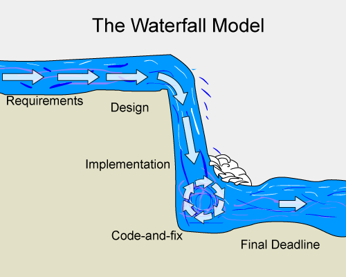
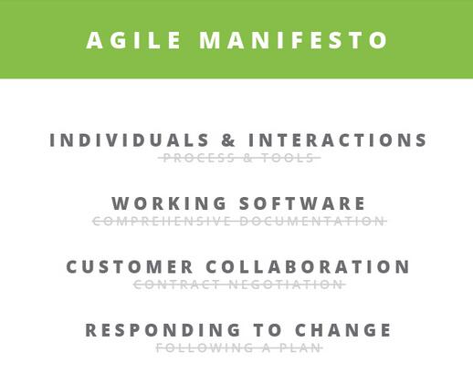
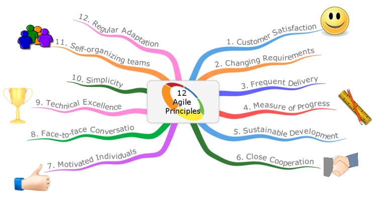
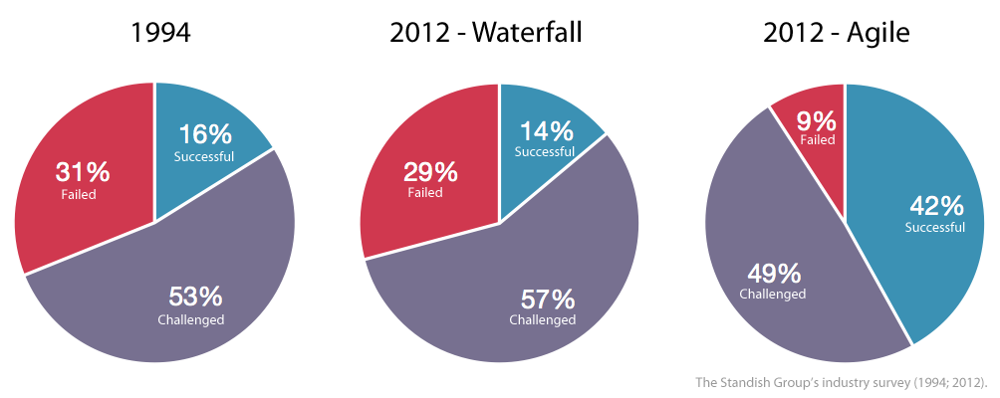

Agile:
"Able to move quickly and easily." Similarly Agile
Software Development Means: "Able to develop software quickly and
easily."
According to www.allaboutagile.com “Agile
is a unique and different way of managing IT development teams and
projects.” Let us briefly review the traditional software
development model. “Water Fall Model” which is also
known as traditional model or plan driven model. Because in
this model planning is done in advance. Therefore it is known as plan
driven model. Once planning is done, there was no procedure to
accommodate changing user requirements.

WF (Waterfall)
model was quite simple and linear model. However success rate of
software never goes beyond 15%. It means almost 85% software failed
or couldn’t qualify user’s expectations due to cost, schedule overrun
or changing customer requirements. (See the image below).
In 2001, 17 developers met together at Snowbird resort in Utah(US). After
this meeting they published the Manifesto for Agile Software
Development –

Agile
manifesto is based on 12 principles-
Customer satisfaction by early and continuous delivery of
valuable software.
Welcome changing requirements, even in late development.
Working software is delivered frequently (weeks rather than
months).
Close, daily cooperation between business people and
developers.
Projects are built around motivated individuals, who should
be trusted.
Face-to-face conversation is the best form of communication
(co-location).
Working software is the principal measure of progress.
Sustainable development, able to maintain a constant pace.
Continuous attention to technical excellence and good
design.
Simplicity—the art of maximizing the amount of work not
done—is essential.
Best architectures, requirements, and designs emerge from
self-organizing teams.
Regularly, the team reflects on how to become more
effective, and adjusts accordingly.

Major Agile Software Development Framework-
Dynamic systems development method (DSDM).
Extreme programming (XP).
Test-driven development (TDD).
Lean software development.
Kanban.
Scrum
Agile Methodologies helps deliver software early and
address user requirements, therefore software success rate increased.

Coming Up: Video lecture series on agile development methodologies.
Note: Based on feedback from
readers, I keep my articles short and crisp, i.e. 500 (English)
words, Reading time: 3~4 minutes.
Feel free to
reach me at: Email: kaushiknt@yahoo.com
WeChat: kklove0604 [NEXT ARTICLE]